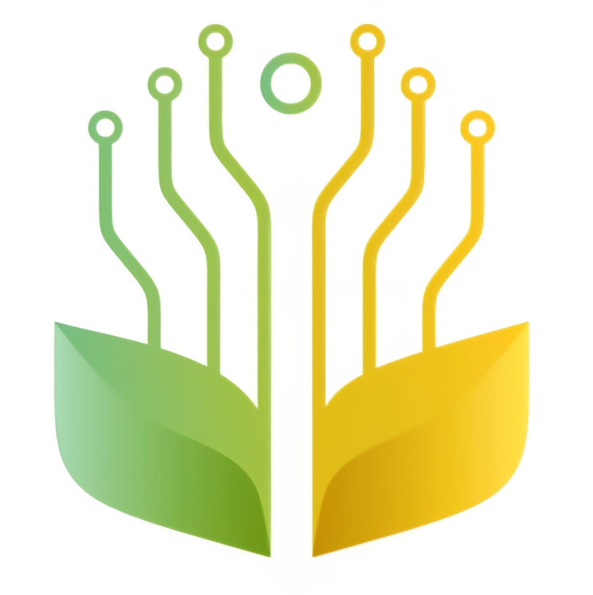
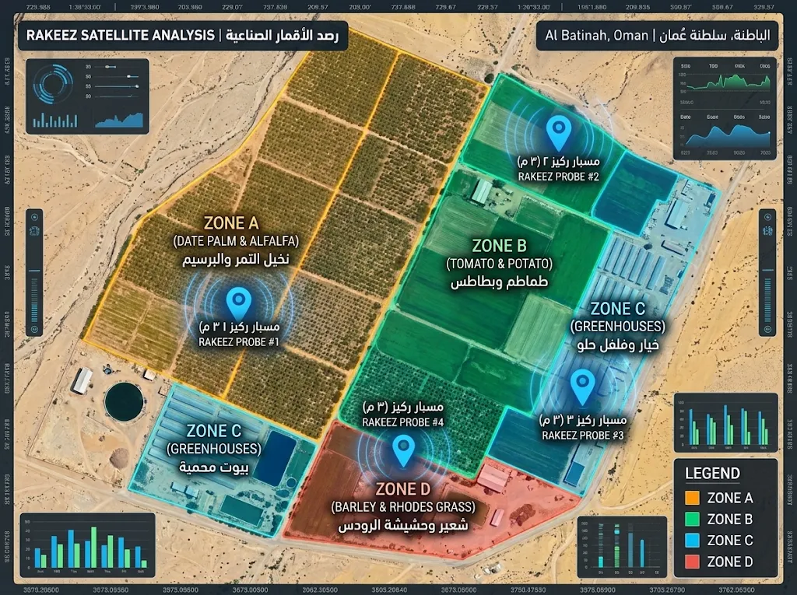

ر
رَكِيز
رصدٌ من الأعماق وتغطيةٌ من الفضاء
لوحة قراءات رَكِيز
رصد لحظي متعدد الأعماق للتربة
الحالة: متصل بمحطة رَكِيز الميدانية (قراءة نشطة ✅)
المحطة: RAKEEZ-BATINAH-01
| المؤشر الحيوي |
القراءة الحالية |
التقييم السريع |
| درجة حرارة التربة |
-- °م |
-- |
| رطوبة التربة |
-- ٪ |
-- |
| الملوحة (EC) |
-- µS/cm |
-- |
| درجة الحموضة (pH) |
-- pH |
-- |
| النيتروجين (N) |
-- mg/kg |
-- |
| الفوسفور (P) |
-- mg/kg |
-- |
| البوتاسيوم (K) |
-- mg/kg |
-- |
🛰️ صورة القمر الصناعي للمزرعة والتحليل المكاني

Zone A: نخيل التمر والبرسيم
Zone B: طماطم وبطاطس
Zone C: خيار وفلفل حلو (بيوت محمية)
Zone D: شعير وحشيشة الرودس
📲 إرسال الخطة الزراعية والتوصيات عبر واتساب
أدخل رقم واتساب المزارع لإرسال ملخص قراءات المسبار وخطة توزيع المحاصيل لكل قطاع بضغطة زر.